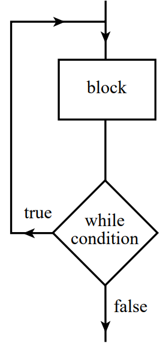
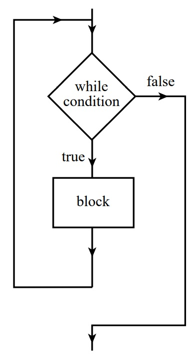
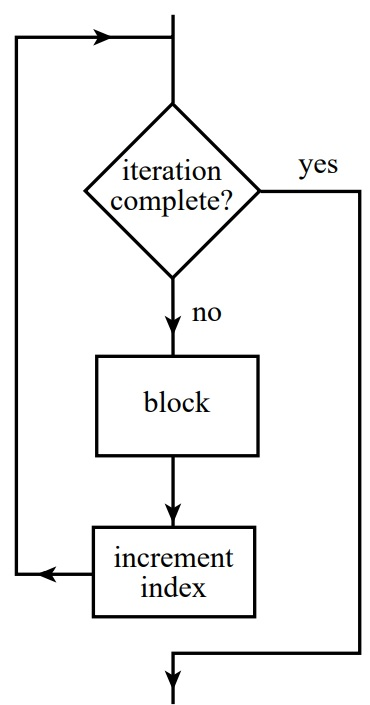

-
Atribuição, leitura e impressão
-
Desvio direto e desvio condicional
-
Usando desvios para simular laços de repetição
-
Laço do...while:

-
Laço while:

-
Laço for:

-
Uso de subrotinas
TW/Fluxus
TW/Fluxus é uma linguagem imparativa, estruturada e procedural. Os comandos são curtos, baseados e poucos símbolos intuitivos, alguns comuns à outras linguagens. Ela visa simular, de maneira escrita, os fluxogramas.
Abaixo mostraremos os comandos básicos e como simular as principais estruturas de seleção, de repetição e o uso de subrotinas. Os comentários da linguagem ficam em linhas iniciadas por #.
Para atribuir, ler e imprimir conteúdo numérico, fazemos dessa forma.
{
# Atribui 3 à variável a.
a = 3;
# Lê um valor numérico em b.
>> b;
# Imprime o valor de a e b separados
# por um espaço em branco.
<< a, " ", b;
}
Para atribuir, ler e imprimir conteúdo de texto, fazemos da forma abaixo.
{
# Atribui "amor" à variável $a.
$a = "amor";
# Lê um um conjunto de caracteres em $b.
>> $b;
# Imprime o valor de $a e $b separados
# por um espaço em branco.
<< $a, " ", $b;
}
Algumas manipulações podem ser em variáves com índices. Cada variável numérica pode ter o índice de 0 a 999999. O uso dos índices pode simular um array unidimensional de até 1000000 de elementos, ou um bidimensional de, no máximo, 1000 x 1000 ou um tridimensional de 100 x 100 x 100, o que já é um tamanho suficiente para a maioria dos usos.
Observe um exemplo de uso de índices em variáveis numéricas.
{
A = 1;
# A[0] é igual a A, logo A passará a ser 2.
# As variávels não são sensíveis ao caso,
# portanto A ou a é a mesma coisa.
A[0] = 2;
# Imprime "2 2 2".
<< A, " ", A[0], " ", a;
# Lê um valor em A[10] após pular
# linha e escrever "A[10] = ".
<< "\nA[10] = ";
>> A[10];
# Imprime o valor de A[10].
<< A[10];
}
As variáveis de texto, quando tratadas com índices, representam caracteres únicos. O maior índice para uma variável de texto é 99999. Ou seja, o tamanho máximo de uma string é 100000.
O exemplo abaixo ilustra esses casos.
{
# Atribui a palavra "Amor"
# à variável $a.
$a = "Amor";
# Imprime o valor de $a
# e pula linha.
<< $a, "\n";
# troca a primeira letra
# de "Amor" por "E".
$a[0] = "E";
# troca a última letra
# de "Amor" por "s".
$a[3] = "s";
# Imprime "Emos".
<< $a;
}
Uma string, quando atribuída ou lida para um caractere, tem apenas sua primeira letra guardada de fato. Expressões numéricas, quando atribuídas a um caractere, se convertem ao caractere de valor ASCII da expressão. Por exemplo:
{
# Será interpretado como 'b',
# o caractere ASCII de número 98.
$c[4] = 72 - 65 + 91;
<< $c[4], "\n";
# Lê apenas o primeiro caractere
# de uma string em $t[3].
>> $t[3];
# Apenas o único caractere
# de $t será impresso.
<< $t[3], "\n";
# Apenas o primeiro caractere
# 'A' será atribuído.
$b[10] = "Amor";
<< $b[10];
}
As expressões numéricas que são mistas com caracteres só serão impressas na forma numérica, onde o caractere terá seu valor tomado como o da tabela ASCII. Por exemplo:
{
# imprime 97 + 61 = 158, pois pois 97 é
# o valor do caractere 'a' na tabela ASCII.
<< "a" + 61, "\n";
# Lê uma string em $t.
>> $t;
# Imprime a subtração do valor ASCII do primeiro
# caractere de $t com 12.
<< $t - 12, "\n";
# Imprime 65 * 2 = 130, pois 65 é o valor ASCII de 'A',
# primeiro caractere de "Amor".
<< "Amor" * 2;
}
Todo código é composto por uma sequência de declarações finalizadas e separadas por ponto e vírgula (;). Para desviar a execução da sequência e saltar para comandos posteriores ou anteriores no código, podemos fazer isso de forma direta ou condicional marcando rótulos numéricos em posições específicas.
O desvio direto (goto) é feito por "-> rótulo", onde rótulo é um número real positivo. Rótulos podem ser acrescentados indefinidamente e serão ignorados pela sequência de execução caso não exista um desvio para eles.
{
# Atribui 2 à variável a.
a = 2;
# Um rótulo inútil, pois não há desvio para ele.
23;
# Desvia para o rótulo 1.
-> 1;
# Este comando não será executado. Logo,
# a não será incrementado para 3.
a = a + 1;
# O desvio anterior envia para essa posição com rótulo 1.
1;
# Será impresso 2.
<< a;
}
Para o desvio condicional usamos "?expressão lógica? -> rótulo". As expressões lógicas são avaliadas como verdadeira (1) ou falsa (0) e, quando verdadeiras, a execução é desviada para a posição do rótulo. Caso a expressão lógica seja falsa, o código continua na sequência original escrita.
{
# Lê um número em a.
>> a;
# Se a >= 5, desvia a execução para o rótulo 1.
?a >= 5? -> 1;
# Caso a não seja maior ou igual a 5, imprime
# seu valor seguido do texto " é menor que 5".
<< a, " é menor que 5";
# Desvia para o rótulo 2 para
# terminar a execução.
-> 2;
1;
# Caso desvie para o rótulo 1, imprime seu
# valor seguido do texto " é maior ou igual a 5".
<< a, " é maior ou igual a 5";
2;
}
A combinação dos desvios diretos e condicionais simula tudo que pode ser representado por um fluxograma, onde os rótulos são os nós para onde as setas desviam. Por isso, qualquer estrutura representável por fluxograma pode ser simulada combinando esses dois comandos básicos.
Abaixo mostraremos estas representações com comentários linha a linha da mesma implementação, mas na linguagem C.
# Imprime os dígitos de 0 a 9.
#-TW/Fluxus---------#-C----------------------
# #include < stdio.h >
{ # int main() {
i = 0; # int i = 0;
#
1; # do {
<< i; # printf("%d", i);
i = i + 1; # i++;
?i < 10? -> 1; # } while (i < 10);
} # }
# Calcula a média de uma quantidade indefinida
# de números com valor de saída (-1).
#-TW/Fluxus---------#-C----------------------
# #include < stdio.h >
{ # int main() {
s = 0; # int s = 0;
i = 0; # int i = 0;
# int n;
>> n; # scanf("%d", &n);
1; #
?n == -1? -> 2; # while (n != -1) {
i = i + 1; # i++;
s = s + n; # s += n;
>> n; # scanf("%d", &n);
-> 1; #
2; # }
<< s / i; # printf("%d", s / i);
} # }
# Calcula a média de 10 números.
#-TW/Fluxus-------------#-C----------------------
# #include < stdio.h >
{ # int main() {
s = 0; # int s = 0;
# int n, i;
i = 0; #
1; ?i >= 10? -> 2; # for (i = 0; i < 10; i++) {
>> n; # scanf("%d", &n);
s = s + n; # s += n;
i = i + 1; #
-> 1; #
2; # }
<< s / i; # printf("%d", s / i);
} # }
Todo programa é executado tendo início em "{" e terminando em "}". É possível dividir o código em módulos e chamá-los como subrotinas. O comando necessário para isso é "=> rótulo". Funciona como um desvio, porém, o rótulo de uma subrotina deve estar fora dos limites do programa principal, isto é, após "}". No final de cada subrotina é necessário incluir o comando de retorno "<-" para que a execução volte aos limites do programa principal para o ponto logo após onde a subrotina foi chamada.
Para ilustrar o uso de subrotinas, vamos mostrar um programa que verifica se um número é primo ou composto. Este programa estará em três versões, onde duas delas usam subrotinas com boas práticas.
# Determina se um número é primo ou não
# sem usar subrotina.
{
<< "TESTE DE PRIMARIDADE\n";
<< "Insira o número: ";
>> n;
?n < 2? -> 4;
i = 2;
1;?i * i > n? -> 2;
?n % i != 0? -> 3;
4;
<< n, " não é primo";
-> 5;
3;
i = i + 1;
-> 1;
2;
<< n, " é primo";
5;
}
O trabalho de impressão dos resultados podem ser atribuídos à duas subrotinas distintas. Neste exemplo, uma é chamada no rótulo 100, para imprimir que não é primo, e outra é chamada no rótulo 200, para imprimir que é primo.
# Determina se um número é primo ou não, chamando
# subrotinas para imprimir os resultados.
{
<< "TESTE DE PRIMARIDADE\n";
<< "Insira o número: ";
>> n;
?n < 2? -> 4;
i = 2;
1;?i * i > n? -> 2;
?n % i != 0? -> 3;
4;
# Chama a subrotina 100.
=> 100;
-> 5;
3;
i = i + 1;
-> 1;
2;
# Chama a subrotina 200.
=> 200; #é primo
5;
}
# Rótulo da subrotina 100.
100;
# Imprime que não é primo.
<< n, " não é primo";
# Retorna par o programa principal.
<-;
# Rótulo da subrotina 200.
200;
# Imprime que é primo.
<< n, " é primo";
# Retorna par o programa principal.
<-;
O próprio processo de verificação de primalidade pode ser feito por uma subrotina. Porém, neste caso, o uso de uma variável global deve ser utilizado como forma de comunicação entre o programa principal e a subrotina.
Observe no exemplo anterior que os rótulos 100 e 200 foram escolhidos como rótulos de subrotinas. Essa prática de escolher rótulos grandes, dos quais o código principal não ancalçaria, é importante para que não haja sobreposição ou ambiguidade nos desvios do programa.
Da mesma forma, toma-se como variáveis globais de entrada e saída das subrotinas as variáveis com índices grandes e significativos, como por exemplo, o índice com o mesmo valor do rótulo da subrotina. Os rótulos internos da implementação da subrotina também devem ser grandes e inatingidos no programa principal. Pode-se usar números concatenados com o rótulo da subrotina. Isso evita o uso inadvertido na subrotina de uma variável do programa principal e vice-versa.
Essa prática torna as subrotinas mais portáveis e reutilizáveis em outros códigos. Porém, sempre conheça a implementação das subrotinas feitas por terceiros, para se certificar de que não há conflitos de variáveis com o seu código, pois TODAS AS VARIÁVELS EM TW/Fluxus SÃO GLOBAIS.
# Verifica se um número é primo ou não
# usando uma subrotina de verificação
# com variável global de comunicação.
{
>> n;
p[100] = n;
=> 100;
?p[100]? -> 1;
<< n, " não é primo";
-> 2;
1;
<< n, " é primo";
2;
}
# Verifica se um número é primo ou não.
# Entrada em p[100]. (número a ser testado)
# Retorno em p[100]. (1 se for primo e 0 se não for)
# Variável auxiliar i[100].
# Rótulos internos 1100, 2100, 3100 e 4100.
100;
?p[100] < 2? -> 4100;
i[100] = 2;
1100;
?i[100] * i[100] > p[100]? -> 2100;
?p[100] % i[100] != 0? -> 3100;
4100;
p[100] = 0;
<-;
3100;
i[100] = i[100] + 1;
-> 1100;
2100;
p[100] = 1;
<-;